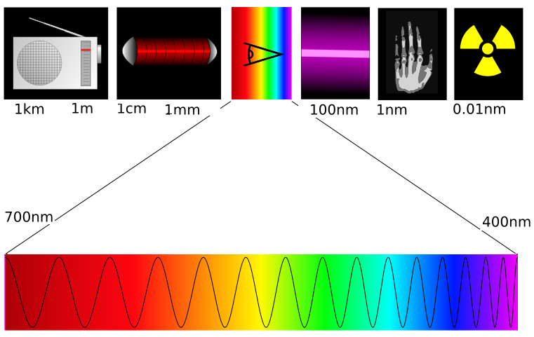

Na física, a cor não é uma propriedade intrínseca dos objetos, mas sim uma interpretação do cérebro baseada no comprimento de onda e na frequência da radiação eletromagnética (luz) que atinge a retina. A luz branca é a soma de todos os comprimentos de onda visíveis.

A luz visível é uma pequena faixa do espectro eletromagnético. Cada cor que compõe o arco-íris corresponde a uma frequência e a um comprimento de onda específico.
Um grupo de pesquisadores que vem testando a física das bolas da Copa do Mundo há 20 anos estudou recentemente, essa nova versão, chamada Trionda. Fabricada pela Adidas, a Trionda tem quatro gomos vermelhos, verdes e azuis, texturizados com sulcos profundos e emblemas de folha de bordo, águia verde e estrela para representar os três países. Em experimentos em túnel de vento, a equipe descobriu que essa bola é melhor do que versões anteriores em alguns aspectos, mas chutes de longa distância talvez não cheguem tão longe quanto no passado.
Os olhos são os órgãos responsáveis pela visão dos animais. O olho humano é um complexo sistema óptico capaz de distinguir até 10 mil cores. Os olhos apresentam como funções principais a visão, nutrição e proteção. Ao receber a luz, os olhos a convertem em impulsos elétricos que são enviados ao cérebro, de onde são processadas as imagens que vemos. As lágrimas, produzidas pelas glândulas lacrimais, protegem os olhos de poeiras e corpos estranhos. O ato de pestanejar também contribui para manter o olho sempre hidratado e limpo. Nem as câmeras fotográficas mais modernas chegam perto da complexidade e perfeição dos olhos ao capturar imagens.

Os principais componentes do olho são: